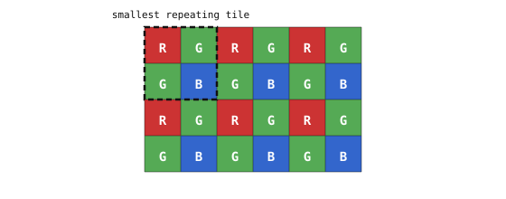

4.10. 彩色传感器¶
每个单元中的光电二极管都是色盲的。它统计硅所吸收的每一种波长的光子，而不区分红、绿、蓝。要从一个色盲的传感器中得到彩色图像，制造商会在像素栅格上覆盖一层 彩色滤光阵列（CFA）：一层薄薄的染料膜，使每个单元只能看到三种原色中的一种。
4.10.1. 拜耳模式¶
占主导地位的 CFA 布局是 拜耳模式，它以其在 Kodak 的发明者命名。这层膜交替排布两种行类型：偶数行是重复的红绿模式（红、绿、红、绿），奇数行是重复的绿蓝模式（绿、蓝、绿、蓝）。在最小的重复单元中 —— 两行乘两列 —— 一个单元看到红色，一个看到蓝色，两个看到绿色。

拜耳彩色滤光阵列。传感器的每个单元只能看到三种原色中的一种；每四个单元中有两个出现绿色。¶
绿色被刻意加倍。人类视觉对绿色的敏感程度远高于对红色或蓝色，而一个场景的感知亮度大部分由绿色通道承载。以红色和蓝色两倍的密度采样绿色，把分辨率预算放在了眼睛最容易察觉的地方，并掩盖了随之而来的色度柔化。
4.10.2. 每个像素记录了什么¶
彩色传感器每个像素仍只存储一个数值 —— 即穿过该像素彩色滤光片的光子计数。一个红色滤光单元记录它的红色通道值；同一位置的绿色值和蓝色值在数据中直接缺失。绿色和蓝色单元也是如此。
因此，以原始 拜耳 格式离开传感器的数据是每像素一个通道、按拜耳模式排布的，而不是成品彩色图像的每像素三个通道。在每个单元位置重建缺失的两个通道的过程称为 去拜耳。
4.10.3. 微透镜与主光线角度¶
光电二极管上方的东西不止彩色滤光片。在它之上还有一个微小的 微透镜，把入射光锥聚焦到光电二极管的有效区域上，而该微透镜的设计前提是光线以接近垂直于传感器表面的方向射入。当光线改为以陡峭的角度到达时 —— 也就是 主光线角度，它在每个真实镜头中都会朝着边角增大 —— 其中一部分光可能落到相邻像素的滤光片上，沾染上错误的颜色，从而产生 颜色串扰。边角像素还会损失饱和度，因为部分光锥完全错过了光电二极管。
传感器的补偿方法是把每个像素的微透镜从传感器中心沿径向向外偏移，以从中间向边角扩展的同心环排布。这种偏移在中心处为零，并在最外环增大到几微米，按烘焙进传感器设计中的特定 CRA 曲线进行调校。把一个传感器与一个 CRA 曲线与其设计目标差异很大的镜头配对，会在边角留下可见的颜色和灵敏度误差，这正是图像传感器和镜头通常要搭配选择的原因。